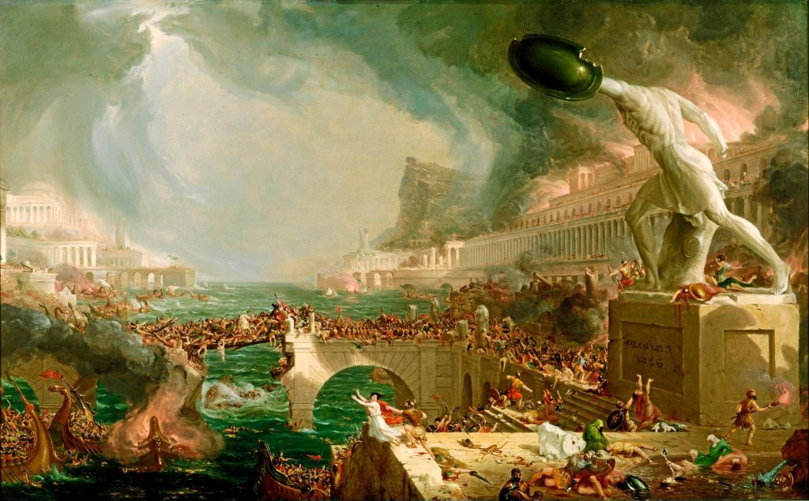
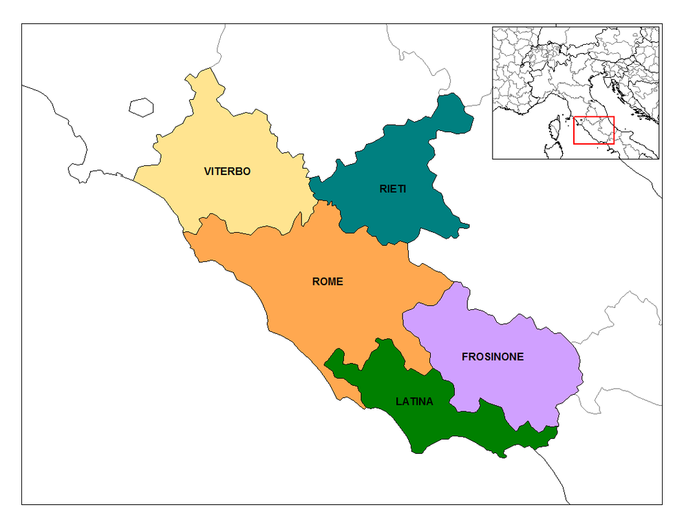

En el año 476 d.C., la ciudad de Roma se ve asediada por un ejército de bárbaros, provocando, a los ojos de la historiografía tradicional, la caída de toda la civilización clásica y el inicio de un período conocido como La Edad Media.
Muchas expresiones culturales que alguna vez simbolizaron el poderío del Imperio Romano de Occidente quedaron en desuso. Las estatuas de mármol finamente cinceladas y los frescos y mosaicos que decoraban las casas de los aristócratas fueron desplazados por un estilo tosco propio de las iglesias románicas. Las instituciones que alguna vez definieron las leyes a través de las cuales miles enmendaban sus litigios pasaron a un segundo plano frente a la creciente influencia de las autoridades monásticas y los gobernantes locales.

No obstante, hay algo de esa cultura antigua que, de un modo u otro, siguió siendo relevante: la lengua latina. Más un milenio después de esa fatídica invasión, el Latín seguía usándose como lengua franca por una buena parte de la comunidad científica y los gobiernos europeos. Tanto en las profundas obras filosóficas de Erasmo como los revolucionarios tratados científicos de Newton, el Latín siguió siendo leído y escrito por numerosas mentes brillantes, alcanzando obras incluso de principios del siglo 19.
Así mismo, incluso hoy en día una buena cantidad de frases y palabras latinas son indispensables para ciertas profesiones, particularmente el Derecho (cuyo referente más antiguo es el romano) y la biología (donde la nomenclatura de muchos seres vivos es mayoritariamente de origen latino o griego).
Por estas razones, resulta menester (y curioso) tener un poco de conocimiento sobre este lenguaje tan influyente.
De acuerdo con Wikipedia (revisado el 25/06/2021 a las 12:09 am), el latín es una lengua itálica, perteneciente al subgrupo latino-falisco y a su vez a la familia de las lenguas indoeuropeas que fue hablada en la Antigua Roma y posteriormente durante la Edad Media y la Edad Moderna, llegando hasta la Edad Contemporánea, pues se mantuvo como lengua científica hasta el siglo XIX. Su nombre deriva de una zona geográfica de la península itálica donde se desarrolló Roma, el Lacio (en latín, Latium).

El latín originó un gran número de lenguas europeas, denominadas lenguas romances, como el español, francés, asturiano, franco-provenzal, friulano, gallego, istriano, istrorrumano, italiano, ladino, ligur, lombardo, meglenorrumano, napolitano, occitano, piamontés, portugués, romanche, rumano, sardo, siciliano, valón, véneto, aragonés, arrumano, asturleonés, catalán, corso, emiliano-romañol, y otros ya extintos, como el dalmático.
En otras palabras, el latín es lenguas tan populares como el español, el francés y el italiano. Así mismo, al ser indoeuropea, tiene conexiones con los idiomas germánicos (como el inglés y el alemán) y con los idiomas eslávicos (como el ruso y el polaco).
Una de las mayores diferencias entre el latín y los idiomas que surgieron de sus bases es la morfología de las palabras. Muchas de las situaciones en las cuales el español, el francés o el italiano hacen uso de preposiciones (de, para, durante, en) son simplemente expresadas en Latín a través de una terminación distinta en la palabra, proceso que se llama históricamente "declinación". Una declinación es un conjunto de unidades atómicas, las cuales al ser adheridas a una raíz, cambia la función sintáctica de un sustantivo en la oración. La declinación en Latín posee 5 "casos" o tipos de terminación que afectan de su propia forma particular al significado de un término:
| Caso | Uso |
|---|---|
| Nominativo | Indica que el sustantivo es el sujeto de la oración |
| Genitivo | Indica que el sustantivo es propiedad o proviene de otro (de) |
| Acusativo | Indica que el sustantivo es el objeto directo de la oración (ente afectado directamente por la acción) |
| Dativo | Indica que el sustantivo es el objeto indirecta de la oración (ente afectado indirectamente por la acción) |
| Ablativo | Indica que el sustantivo es un componente circunstancial de la oración (lugar, emoción, manera, medio, etcétera) |
| Vocativo | Sustantivo en interjección, llamado |
| Locativo | Sustantivo que indica ubicación (solo para ciertos sustantivos) |